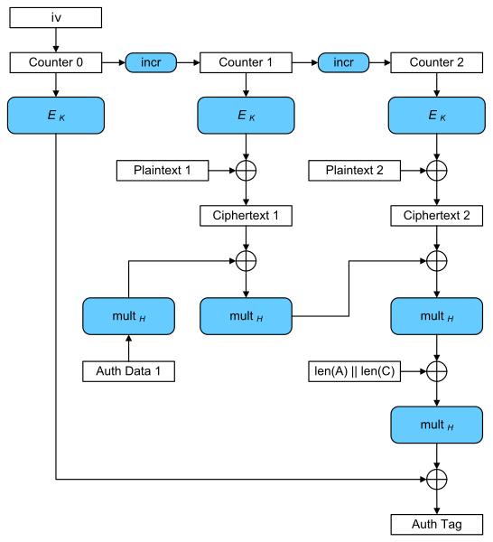

Auth in a Nutshell: Cryptography
a brief look at cryptographic algorithms
Kevin Wang · Thu, May 23, 2019 Last modified 2020-11-01 · 18 min read 3789 Words PermalinkAuthentication is often one of the most complicated portions of an application to design and write, simply due to the breadth of services that depend on it, and the depth of features that it as a service must provide. Dependent services often have unique requirements from the authentication service such as resource ownership, permissions, and access control. It is important to note, that despite this perceived importance, authentication is not inherently more important compared to the other services that compose an application. As Linus Torvalds famously said, “security problems are just bugs”1. Nevertheless, just as correctness of the OS kernel is more important than user level applications, correctness of the authentication service is usually one of the most important parts of an application due to its large number of dependants.
It is no surprise, then, to find that many projects choose to use an OAuth provider for application sign-in, instead of rolling their own. This makes the sign-in process harder to implement incorrectly, but with the added cost of a large amount of complexity in the authentication flow. However, there are many benefits to rolling your own authentication. It gives you, the developer, full control over your authentication flow, and reduces the number of dependencies on external web services, improving application reliability. Unfortunately, authentication has a large amount of moving parts, and they can be overwhelming to understand and design and use correctly. While I am by no means a security expert, I want to share my experiences designing the authentication system for my Governor microservice project , and how it all works.
This topic will cover a short series of blog posts, of which this post is Part 1. Here are links to all sections:
- Part 1 Auth in a Nutshell: Cryptography
- Part 2 Auth in a Nutshell: Passwords
Cryptography: a primer
First, it is important to understand the differences among cryptographic algorithms and the wide array of terminology used, so that it is clear what to use in certain situations.
Encryption
Encryption algorithms take a key and some plaintext data, to produce ciphertext data. The plaintext data is encoded in the ciphertext, but only those with knowledge of the key are able to decrypt the ciphertext and reproduce the original plaintext. It is important to note that encryption, as an algorithm, is designed to be reversible (for those with knowledge of the key). Modern encryption algorithms do not rely on “security through obscurity”, i.e. their designs are public, and their security does not rely on keeping their implementations a secret. Encryption algorithms are instead secure due to the immense size of their key space. With most keys at about 256 bits in size (known as 256 bit security), breaking a secure encryption algorithm would, on average, require attempting 2^255 key guesses, which would take most state level actors years, even with optimizations, to brute force.
Symmetric Encryption
Symmetric encryption, as its name implies, uses the same key for encryption as it does for decryption. The most secure encryption algorithm, symmetric or otherwise, is a one-time pad cipher2. It is also extremely simple to implement:
- generate a list of truly random bits longer than the plaintext input string, called the “key”
- XOR the plaintext with the key, to produce the ciphertext
- decrypt the ciphertext by XORing it with the key to produce the plaintext
- discard the key after it has been used, and do not reuse it for any future communication
One-time pads are symmetric encryption (since they share the same key to
encrypt and decrypt), and they are invulnerable to all cryptanalysis due to the
equal distribution between 1’s and 0’s of the XOR function and the key, i.e.
from a potential attacker’s perspective, literally any string with a length
less than or equal to the ciphertext could have been the plaintext. It is
important to remember step 4, however. Key reuse can lead to a situation where
an attacker can XOR two ciphertexts to remove the key, since (plaintext1 XOR key) XOR (plaintext2 XOR key) = (plaintext1 XOR plaintext2). This would allow
the resulting string to be decrypted via frequency analysis and similar tools,
without the attacker needing to know the key.
One-time pads have a downside however: the key must be at least as long as the plaintext. This makes encrypting files that are on the order of megabytes in size impractical, since the key must be millions of bits long. There are other symmetric encryption algorithms, however, which can be broadly categorized into stream and block ciphers. Their names suggest, correctly, that stream ciphers encrypt plaintext on a character by character level (e.g. the Lorenz cipher3 used in WWII), while block ciphers encrypt entire “blocks” of data (which may vary in size) independently (e.g. AES4).
Unfortunately, both of these types of algorithms, in their earliest forms, had their own glaring weaknesses. Simple stream ciphers, operating at a character level, were often weak to cryptanalysis. Provided enough ciphertext, an attacker may be able to guess what the key and the state of the encryption machine is, which British cryptographers at Bletchley Park were able to do to the Lorenz cipher with the aid of Colossus5. Simple block ciphers, while they strongly encrypt messages that are under a block in size, suffer from potentially outputting the same ciphertext block for the same plaintext block within the same message, since they encrypt blocks of data independently. Using the following images as an example, one can see that regions of the image with the same color encrypt to the same ciphertext in a naively applied block cipher. This is, by definition, weak to frequency analysis.
{kind=link}
{kind=link}
Modern symmetric encryption algorithms circumvent these issues by mimicking a one-time pad cipher with a stream cipher. Take, for example, AES-GCM, which itself is based on the secure AES block cipher to mimick a stream cipher6. Some initial value, key, and counter are run through AES repeatedly while incrementing the counter, therefore producing a pseudorandom stream of bits similar to a one-time pad. These bits are then XOR’d with each plaintext block to produce the cipher text. The ciphertext then goes through a system to allow the receiver to verify the integrity of the message, which is covered in more detail in the MAC section of hash functions , later.
{kind=link}
AES-GCM is now the de facto symmetric key algorithm. With a key size of 256 bits, it currently is not known to be cryptographically vulnerable for the foreseeable future. Unfortunately, despite its security, its implementation in machine code is slow without a specialized instruction set, such as AES-NI7. This also makes it potentially vulnerable to side-channel attacks while encrypting data, such as a timing attack8, on machines without a specialized instruction set. As a result, ChaCha20-Poly1305 is also gaining traction, having recently been standardized by the IETF with Google’s support9. ChaCha20 and her original sister cipher Salsa20 are stream ciphers, unlike the AES block cipher, and their implementations are consistently fast on hardware even without specialized instructions10.
Nevertheless, symmetric encryption algorithms offer many benefits. They are, compared to other encryption algorithms, relatively fast to execute due to their design; an indefinitely long pseudorandom string of bits may be efficiently generated to encrypt arbitrarily large files. Symmetric encryption algorithms are also quantum resistant. Using Grover’s algorithm, the security of a symmetric cipher such as AES or ChaCha20 only quadratically decreases with a quantum computer, i.e. AES-256 would only have 128 bits of security instead of 25611. These issues can be easily resolved by doubling the key size.
The only major downside to symmetric encryption is that both communicating parties must know the key. When it is impossible for these parties to physically meet, this can lead to a chicken and egg problem, i.e. there is no secure means to send the secret key to the other party since no shared secret key has been shared. The two main approaches to deal with this issue are key exchange , discussed in its own later section, and asymmetric encryption.
Asymmetric Encryption
Also known as public key cryptography, asymmetric encryption relies on two separate keys in order to send and receive data. One of these is called the “public” key, and the other, the “private” key. These two keys form what is known as a “key pair”. A sender may securely send information to a designated receiver by using an asymmetric encryption algorithm along with the receiver’s public key to generate the ciphertext. It is important to note that the public key is, in fact, public knowledge. Only the receiver, who knows what the secret key is, may decrypt the ciphertext to obtain the original plaintext. Asymmetric encryption has the added benefit over symmetric encryption that one does not need to generate a new key for every new party one wants to communicate with. With symmetric encryption, sharing the same key could lead to every party with the shared key decrypting each other’s messages. In asymmetric encryption, different keys are used for encrypting and decrypting messages, thus the encrypting “public” key can be shared amongst everyone.
The first asymmetric cryptographic encryption algorithm was discovered by the British GCHQ, who classified it as top-secret to prevent it from being used by others. Much to their surprise, the algorithm was independently rediscovered by Rivest, Shamir, and Adleman based off the work of Diffie and Hellman12. Now known as RSA, the algorithm works by exploiting Euler’s totient function, which is easy to calculate for a number if one knows its prime factorization, and difficult otherwise. This property of the totient function makes it a trapdoor function, a function that is computationally difficult, unless one knows special information, in this case the prime factorization. RSA chooses a semiprime number for this, because semiprime numbers are the most difficult to factor for their size. RSA is presently secure, because factoring is an NP problem.
It seems then that asymmetric encryption should always be used, however it has some caveats. RSA itself is computationally expensive compared to a strong symmetric encryption algorithm such as AES. Encrypting a file on the order of megabytes in size would take far longer than AES. Furthermore, since RSA uses prime numbers, the frequency of prime numbers affect the number of bits of entropy within an RSA key, i.e. unlike in AES, not all 2^N possible keys are valid, because not all are semiprime. As a result, RSA needs a 15360 bit key to have approximately the same strength as AES-256. RSA itself is also completely vulnerable to quantum attacks using Shor’s algorithm to factor numbers in polynomial time13. Unlike with AES, where the key size can be increased, there is no remedy for this type of attack.
Fortunately, while RSA has been the mainstay of public key cryptography, some of these issues are being addressed by other asymmetric encryption algorithms. Elliptic curve cryptography has become more popular in recent years. ECC is based on the difficulty of the more general discrete logarithm problem. ECC maps an elliptic curve onto a finite (Galois) field, where the operations of multiplication and addition are redefined. (Warning: It is strongly believed that the NSA has backdoored the NIST elliptic curves, thus compromising ECDSA. It is recommended to use EdDSA instead on the Ed25519 elliptic curve.) Because ECC does not rely on prime numbers, it has much smaller key sizes. An ECC key of 521 bits is approximately equal in strength to AES-256. Unfortunately, ECC is still vulnerable to quantum attacks via Shor’s algorithm. As a result, new systems such as lattice-based cryptography are currently being developed14, which have not yet been found to have a quantum weakness.
Asymmetric and symmetric cryptography also do not have to be used mutually exclusively. Software such as GPG can symmetrically encrypt a large file, e.g. with AES, then encrypt the symmetric key with an asymmetric algorithm, e.g. with RSA. While the strength of the encryption will only be as strong as the weaker of the two keys (most likely RSA), this allows the sending of data without having to physically meet and share a secret key.
Public key cryptography has other interesting applications such as signing content with the private key that can be verified with the public key, and this is discussed in the later section of signing algorithms .
Key Exchange Algorithms
Key exchange algorithms are a mechanism by which two parties can communicate
over an untrusted communication channel to arrive at a single shared secret
key, while any potential listeners to that conversation will be unable to
derive the key. These are most often used for sharing symmetric secret keys, as
an asymmetric encryption system does not need such a system. The Diffie-Hellman
key exchange protocol is the most common form of key exchange protocol. Suppose
two parties Alice and Bob wanted to establish a shared secret key over an
untrusted channel. Diffie-Hellman uses some irreversible special function,
which we will denote as f(x, i) -> c. Alice and Bob first establish some
common base x, which can be sent unencrypted over the channel. Alice chooses
some secret number a, and computes f(x, a) -> c_a. Likewise, Bob chooses
some secret number b, and computes f(x, b) -> c_b. c_a and c_b are
exchanged by Alice and Bob over the public channel. Alice now computes f(c_b, a) -> c_ba, and Bob computes f(c_a, b) -> c_ab. If the function f is
chosen carefully, c_ba = c_ab, and if f is irreversible, any listener to
this conversation will be unable to produce c_ab since that would require the
knowledge of a or b which have been kept secret. In the original
implementation, Diffie-Hellman uses an f((g, p), i) = ((g^i mod p), p), which
can be verified to work since ((g^a)^b) = ((g^b)^a) (mod p). A = g^i mod p
is also easy to compute, but given g, p, and A, it is difficult to
compute i, making the function irreversible or “one-way”. Diffie-Hellman can
use other functions, such as elliptic curves mapped onto finite fields to
create the Elliptic Curve Diffie-Hellman algorithm15.
One may ask why key exchange algorithms are needed when a combination of asymmetric and symmetric algorithms can be used, as in the case of GPG to exchange data. Key exchange algorithms are needed due to the ideal of perfect forward secrecy. When using asymmetric encryption, if the key is broken in the future, then all past messages encrypted using that key can be decrypted. With a key exchange protocol, a new key is established for every new communication between the two parties. Breaking one key will only break the messages sent for a single session. This is how Diffie-Hellman is used to secure communication in TLS for the HTTPS protocol for websites16. Furthermore, a variant of Diffie-Hellman, known as Double Ratchet Diffie-Hellman has been used by Whatsapp, Signal, and others to create protocols that enable perfect forward secrecy within the same session of communication17.
Hash Functions
A hash is a function that maps an input string to a fixed length output. Hash functions are used whenever an arbitrary amount of data needs to be represented by a relatively small, fixed amount of bytes. Cryptographic hash functions, however, have some added constraints. First, the function itself must be one-way, or irreversible, i.e. it is easy to compute the output given the input, but given the output, it is computationally too expensive to find the input. Second, hash collisions should be rare, and computationally too expensive to find. The idea behind a cryptographic hash function is to have a function that can, for all intents and purposes, uniquely represent an arbitrary amount of data with a few fixed number of bytes.
Common cryptographic hashes include: SHA-2 , SHA-3, and BLAKE2 . SHA-1 has had a hash collision, and should not be used going forward18. The SHA-3 algorithm, Keccak, was chosen in a competition by NIST, over BLAKE, for its differences from SHA-2 in the event SHA-2 were ever broken. But SHA-2 has not been broken yet, and thus the recommendation is to use BLAKE2 for cryptographic hashes. If an implementation of BLAKE2 is not available, SHA2-512, or SHA2-256 should be used.
Because collisions are rare for a good cryptographic hash, they are often used to check whether data has been changed or tampered with. This application of a hash, known as a hash-based message authentication code (HMAC) allows one to verify the integrity of the data19. An HMAC works in general by hashing a concatenation of the original plaintext and the encryption key, to produce a MAC which is sent along with the cipher text to the receiver. If the ciphertext were tampered with in any way, then the MAC will not match the hash of the decrypted data. The MAC also cannot be easily faked since it depends on the secret encryption key itself. Many common libraries are now beginning to support an “authenticated encryption with associated data” (AEAD) mode for their encryption, which uses MACs by default and reduces the chance that the encryption algorithm will be misused20. Common MAC hashes include SHA-2 and Poly1305 . Similarly, cryptographic hashes are also used in signing algorithms (covered later) to represent the contents of the entire data.
More recently, cryptographic hashes have found an application in proof of work systems such as blockchain. Proof of work relies on the fact that a cryptographic hash is difficult to reverse, thus the entire security of the system is dependent on the fact that a single entity does not have more than 50% of the computational power.
Password Hash Functions
Normal cryptographic hash functions are designed to be fast to compute. BLAKE2b hashes at a rate of 947 MBps21. A password hashing function on the other hand is designed to be slow to compute, and difficult to parallelize and pipeline. This is due to the unique nature of how passwords are stored.
Passwords should not be stored in plaintext, or even stored in an encrypted format. Plaintext passwords should be irrecoverable from their stored forms. Passwords should be salted and hashed, and those hashes should be stored in some datastore. In order to check if an entered password is correct, the entered password should be hashed again and compared against the stored hash. Because a hash is a function, the same input should result in the same output hash.
An attacker of a password hash would effectively have to try every possible
input, assuming the actual password is random enough, and not the obvious
hunter222. The easier the hash is to compute, the faster an attacker
is able to guess different values. For normal data, the content is long enough
so that finding a hash collision is still impractical due to the large size of
the input. Passwords, however, are unique in that they are relatively small in
size. Thus the hash itself needs to be designed to be slow.
Bcrypt is the de facto password hashing algorithm, and has been in use for a decade. It works by recursively hashing the input for a configurable 2^N iterations, or “rounds”, where N is the work factor23. Thus as computers grow more powerful, bcrypt’s number of rounds can be increased proportionally. For the year of 2019, a workfactor of 13 is recommended, though benchmarks on your own hardware will give more accurate results. The highest work factor where the average hash takes no longer than several hundred milliseconds should be preferred. Other password hashing algorithms have similar designs. While bcrypt is still recommended, more modern password hashes have better defenses against other attacks. Scrypt and Argon2 have configurable memory work factors, to make their hashes difficult to execute on GPUs2425.
Signing Algorithms
Encryption algorithms, key exchanges, and hashes allow their users to safely and securely transmit data and verify their integrity. However, they alone do not verify who the sender or receiver are. Without some other mechanism, they are prone to man-in-the-middle (MITM) attacks . For example, say Alice and Bob are attempting to communicate over a network controlled by Eve. Alice wants to send an asymmetrically encrypted message to Bob, and thus needs Bob’s public key. Eve, who is in control of the network, could give Alice her own key instead of Bob’s. Alice, who has no way to verify who owns what key, uses Eve’s key thinking that it is Bob’s, allowing Eve to decrypt Alice’s message. Furthermore, Eve can then reencrypt the plaintext message with Bob’s actual public key, and send it to Bob, with Alice and Bob being none the wiser that Eve is eavesdropping on the conversation. Similarly, one can imagine a similar scenario with Diffie-Hellman key exchange, where Eve negotiates two secret keys with both Alice and Bob who think that they are communicating with one another. Thus, signing algorithms are needed to provide an unforgeable way to verify data from a sender.
Signing algorithms are based on public key cryptography, of which RSA, ECC,
lattice-based crypto, etc. versions exist. They use the secret private key of
the user to produce a digital signature of some data (usually a hash if the
data is significantly large). This signature is then sent along with the data
which can be verified by the receiver with the sender’s public key. However,
there is a bootstrapping issue here, where one cannot trust the sender’s public
key, because the sender’s public key cannot be verified with the public key.
Thus, certificate authorities exist to solve the bootstrapping issue. A
certificate authority has a public key that is well known and preloaded on
communication devices. The certificate authority then offers a service where it
will personally verify and sign the public keys for individuals, granting them
a signature of their key, known as a certificate. This certificate is then sent
along with the public key of the sender in communication, and the receiver is
able to check that the certificate is valid with the preloaded certificate of
the certificate authority. This is how HTTPS certificates work, and how a
browser knows that it is in fact communicating with, say, xorkevin.com and
not some spoofed website.
And here ends Part 1.
-
Linus Torvalds’s response https://lkml.org/lkml/2017/11/17/767 ↩︎
-
one-time pad https://en.wikipedia.org/wiki/One-time_pad ↩︎
-
Lorenz cipher https://en.wikipedia.org/wiki/Lorenz_cipher ↩︎
-
AES https://en.wikipedia.org/wiki/Advanced_Encryption_Standard ↩︎
-
AES-GCM https://en.wikipedia.org/wiki/Galois/Counter_Mode ↩︎
-
timing attack https://en.wikipedia.org/wiki/Timing_attack ↩︎
-
ChaCha20 https://tools.ietf.org/html/rfc7539 ↩︎
-
ChaCha20 speed https://en.wikipedia.org/wiki/Salsa20 ↩︎
-
Grover’s algorithm https://en.wikipedia.org/wiki/Grover%27s_algorithm ↩︎
-
Shor’s algorithm https://en.wikipedia.org/wiki/Shor%27s_algorithm ↩︎
-
lattice-based crypto https://en.wikipedia.org/wiki/Lattice-based_cryptography ↩︎
-
Diffie-Hellman https://en.wikipedia.org/wiki/Diffie%E2%80%93Hellman_key_exchange ↩︎
-
Diffie-Hellman in TLS https://wiki.openssl.org/index.php/Diffie_Hellman#Diffie-Hellman_in_SSL.2FTLS ↩︎
-
double ratchet https://en.wikipedia.org/wiki/Double_Ratchet_Algorithm ↩︎
-
SHA-1 collision https://www.zdnet.com/article/sha-1-collision-attacks-are-now-actually-practical-and-a-looming-danger/ ↩︎
-
AEAD https://en.wikipedia.org/wiki/Authenticated_encryption ↩︎
-
BLAKE2 hashrate https://blake2.net/ ↩︎
-
hunter2 origins http://bash.org/?244321 ↩︎